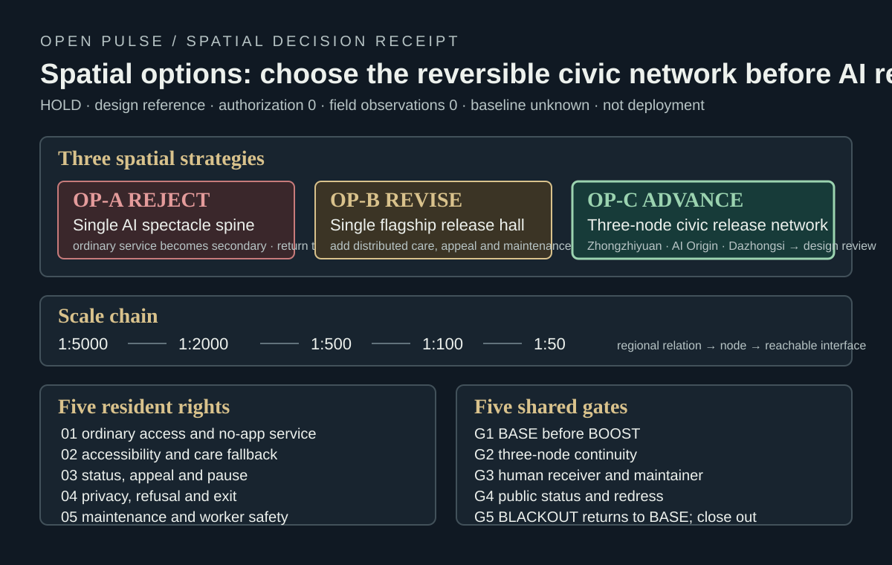
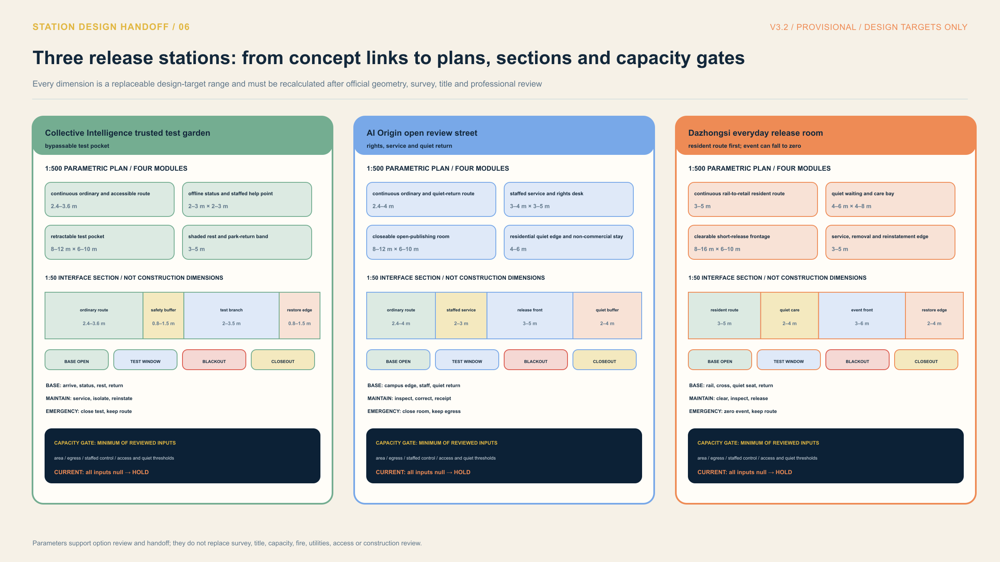
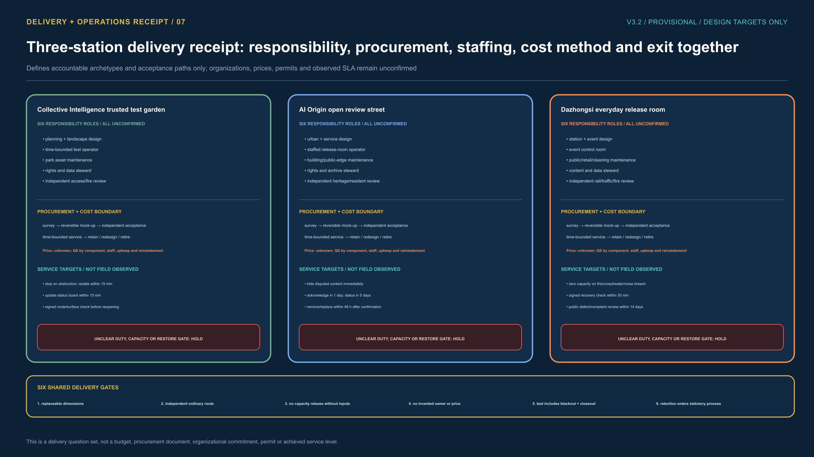

The city does not chase model versions.
It releases civic versions.
Jing-Zhang Open Pulse turns an AI project into a public release discipline that can stop, repair and retire: publish the issue, bound the trial, pass evidence gates, then release. Ordinary service stays available throughout.

One civic release. Six gates that cannot be skipped.
Models may update every day; public space cannot experiment every day. Each version leaves a public issue, a boundary, reproducible evidence, a human decision, a release receipt and an exit path. No average score may hide an unknown.
Spatial options before AI release.
Three spatial strategies are compared on one receipt: OP-A is rejected, OP-B must be revised, and only OP-C, the three-node civic release network, advances to design review. The 1:5000 to 1:50 scale chain is controlled by five rights and five shared gates, with failure returning to BASE.

Three stations, not three showrooms.
Each station carries one civic-version capability: Collective Intelligence keeps risk in a bypassable test pocket; AI Origin makes provenance, contribution, withdrawal and staffed service visible on one street; Dazhongsi tests whether an event can fall safely to zero while the resident route remains.




Review the technical route and the human route on one page.
Slow mobility, blue-green public space, buildings and renewal projects carry the version test together. AI occupies one removable branch; a network outage or stopped trial must not erase the human route.


Current evidence boundary
Known: submitted GeoJSON reproduces area, green, public-space and concept-network quantities; the local synthetic S-02 tabletop passed 6/6 contract checks.
Unknown: official boundary, title and permits, field pedestrian/accessibility baseline, microclimate, drainage, real robot performance and resident consent.
Decision: field window HOLD; public release not issued. Do not expand until these unknowns are resolved and reviewed by professionals and public representatives.
Review coverage: overview map · three-level scope · key areas · land use · slow mobility · blue-green public space · buildings · renewal projects · AI scenarios · core metrics · task coverage · self-check state · sources · assumptions
The method draws on NIST AI RMF lifecycle governance, the UK ATRS public algorithm record, and research on long-lived urban living labs. It adopts governance mechanisms only and transfers no external performance result to Jing-Zhang. This page is fully offline and loads no remote runtime asset.